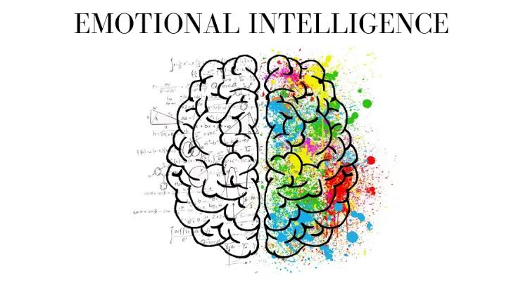

.jpeg)
This being a very common argumentative topic, I believe intelligence is dependent on ability rather than effort. Some people are naturally weird and distinct to process information better and quicker than others, hence giving them an edge in understanding faster or even catching on to little things others might miss. The quick-witted ones who, by definition, have the ability to accurately assess a particular situation or action and react accordingly did not learn how to do that by working so hard. They were naturally gifted with it. It is an innate ability planted in them already and all they have to do is to manifest it when required. Some of the world’s smartest people such as Garry Kasparov who at the age of 27 became the youngest-ever outright world champion in chess and Terence Tao who at the age 13 became the youngest gold medal recipient in international mathematical Olympiad history were born with such intelligence. Having great intelligence as a natural ability is like a leverage which makes one perform better, easier and faster than other. While on the other hand, effort just makes one go at a normal or even slow pace. One won’t be able to go beyond what you’ve put your effort into. Most people find it difficult to comprehend but are still able to bring up the best of themselves just by putting in more effort than usual. This shows that effort, indeed, can put off the work of being intelligent, but to some extent. Intelligent people have the natural ability in them, but also need to put in effort to be able to reach their peak.
There are some people who become intelligent due to sheer effort, however, there are cases where the more naturally intelligent people will not need as much time, rational thinking, or effort to challenge the one who gained knowledge due to effort. Their answers come off as punchier and more effortless. Natural ability is what makes understanding easier and faster. But effort has its place too. Talent can make one stand out immediately, essentially, it just makes things easier and more effortless, but if one doesn’t improve through conscious effort and seek more knowledge past their natural ability, then they might remain stagnant. And the effort and conscious driven person might actually surpass them. Effort together with natural ability is a deadly combination as compared to just ability or just effort. But ability is the starting point. It is what makes everything else easier and opens the door for other intelligence promotional tools to come in. It is a fact, maybe not generic, that we cannot actually improve or work on what we were not given. This happens not only in the aspect of intelligence, but also in the basic aspect of life. To name a few, we have to be given questions before we provide answers, we have to be given food before we can advance to eating something. This also applies to intelligence in the sense that we have to be given it as an innate ability before we can talk of trying to grow or improve it. Mere effort cannot just create intelligence out of nothing, it would rather bring us to the realization that were actually had that ability already in us.
.jpeg)
In relation, intelligence can also be inherited. It can be passed down through genes as a talent. There are various examples of famous and prestigious people who got their abilities from their parents or someone in their lineage. Take for instance; Kobe Bryant, whose dad played basketball in Europe. He already got the natural height and athleticism from his parent. Another is Stephen Curry. Stephen and his brother, Seth Curry, are both NBA players whose dad also played in the NBA. Although, what actually made these people this prestigious are the efforts they put into activating their potentials and maintaining their relevance through commitment and passionate dedication. They might not have been able to create that niche for themselves without the inheritance gotten from their parents as a talent or other forms of special abilities.
Financial ability can also increase one’s intelligence as well. If a person grows up in a financially buoyant household, he or she has access to the best books, travel around the world at will and attend the attends the best schools, it can contribute to their wider knowledge and experience of issues, hence shaping their intellect. A lot of these opportunities do not come with being financially impotent, and this can undermine the intelligence of a person. To add, being financially capable or well connected to receive quality training from highly qualified teachers can extend one’s intellect and skills in a given field. Actually, having the financial ability to provide oneself or someone else with a substantial level of education or lifestyle doesn’t make up for the finishing point. Efforts also have to be put in place. You need to read and prepare diligently in order to pass exams, you need to be more inquisitive to gain more knowledge, you need to make the right contacts to receive progression in some cases. All these are not just gotten with hundred percent finance and zero effort. But without the right financial abilities, success at its peak might be hindered.
There is also a phenomenon called emotional intelligence. Some people are born with a great deal of emotional intelligence than others. Many of us are not aware of how our emotions may adversely be affecting our thinking and actions. Being able to keep calm and maintain sangfroid under stress shows that one can express intelligence through their emotions. While it can be learned through effort, it most times exhibit itself through naturally emphatic, sensitive, and humble individuals. By definition, emotional intelligence is the natural ability within us that enables us to make good decisions and maintain that effective capability even under stress. Although, anyone can learn how to control their emotions in the long run through, maybe, therapy, having the intelligence as an innate ability in that aspect of one’s life may actually require less effort in managing their emotions.
Having read the above, you should be:
As common as intelligence may appear to be, we all have the power to make it unique.
- K.P. Atobatele
Please Leave a Reply
Your email address will not be published.
Did you find this write-up helpful?